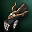
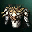

Masterwork
El Masterwork/Foundation es un bonus adicional que puede salir al craftear un Ãtem, 4% en las armaduras y 1% en las armas. El desellado de los mismos se hace con Mammon's Varnish Enhancer (comprandolos en el Merchant of Mammon) y se desella en el Blacksmith of mammon. Todas las partes de armaduras (excepto el pecho) dan un bonus adicional similar al bonus que da el set.
| Moirai | |||
|---|---|---|---|
| Heavy | |||
| Item | Bonus | Item | Bonus |
 Moirai Helmet
Moirai Helmet |
*P.Atk +1.25% *Atk.Spd +1% *Stun resistance +5% *Fire resistance +3 |
Moirai Gauntlet |
*P.Atk +0.83% *Atk.Spd +0.67% *Stun resistance +5% *Wind resistance +3 |
| Moirai Boots |
*P.Atk +0.83% *Atk.Spd +0.67% *Stun resistance +5% *Earth resistance +3 |
Moirai Gaiters |
*P.Atk +2.08% *Atk.Spd +1.67% *Stun resistance +5% *Water resistance +3 |
| Moirai Shield | *Chance to resist magic damage +2% | ||
| Moirai Breastplate |
Bonus Set: *STR +2, CON -2 *P.Atk +4.26% *Atk.Spd +4% *Stun resistance *Chance to resist magic damage +2 *Fire/Water/Wind/Earth resistance +3 *Enables the Cloak slot + Shield - Shield Defense Rate +5% Bonus set +6: When all set items are enchanted to +6 or above: P.Def +59, MP Regeneration + 2.823. |
||
| Light | |||
 Moirai Leather Helmet
Moirai Leather Helmet |
*MP Regeneration +1% *P. Atk. +1.25% *Hold resistance +5% *Fire resistance +3 |
Moirai Leather Gloves |
*MP Regeneration +0.67% *P. Atk. +0.83% *Hold resistance +5% *Wind resistance +3 |
| Moirai Leather Boots |
*MP Regeneration +1% *P. Atk. +1.25% *Hold resistance +5% *Fire resistance +3 |
 Moirai Leather Legging
Moirai Leather Legging |
*MP Regeneration +1.67% *P. Atk. +2.08% *Hold resistance +5% *Water resistance +3 |
 Moirai Leather Breastplate
Moirai Leather Breastplate |
Bonus Set: *DEX +2, CON -2 *P.Atk +4.26% *Atk.Spd +4% *Speed +3% *Hold resistance +50% *Fire/Water/Wind/Earth resistance +3 *Enables the Cloak slot Bonus set +6: When all set items are enchanted to +6 or above: M.def +33, Evasion +2 |
||
| Robe | |||
 Moirai Circlet
Moirai Circlet |
*M. Atk. +0.62% *Paralysis resistance +5% *Fire resistance +5 |
Moirai Gloves |
*M. Atk. +0.41% *Paralysis resistance +5% *Wind resistance +5 |
| Moirai Shoes |
*M. Atk. +0.41% *Paralysis resistance +5% *Earth resistance +5 |
Moirai Stockings |
*M. Atk. +1.03% *Paralysis resistance +5% *Water resistance +5 |
| Moirai Sigil | *Chance to resist magic damage +2% | ||
 Moirai Tunic
Moirai Tunic |
Bonus Set: *WIT +2, MEN -2 *M.Atk +8.11% *Casting Spd +15% *Fire/Water/Wind/Earth resistance +3 *Paralysis resistance +50% *Enables the Cloak slot Bonus set +6: When all set items are enchanted to +6 or above: P.def +38, Weight Limit +30% |
||
| Vesper | |||
|---|---|---|---|
| Heavy | |||
| Item | Bonus | Item | Bonus |
| Vesper Noble Helmet |
*Max. HP +133 *P. Atk. +0.62% *P. Def. +0.62% *Sleep resistance +10.5% *Hold resistance +10.5%. |
Vesper Noble Gauntlet |
*Max. HP +22 *P. Atk. +0.41% *P. Def. +0.41% *Sleep resistance +7% *Hold resistance +7% |
| Vesper Noble Boots |
*Max. HP +22 *P. Atk. +0.41% *P. Def. +0.41% *Sleep resistance +7% *Hold resistance +7% |
Vesper Noble Gaiters |
*Max. HP +55. *P. Atk. +1.03% *P. Def. +1.03% *Sleep resistance +18% *Hold resistance +18% |
| Vesper Shield | *Chance to resist magic damage +2%. | ||
| Vesper Noble Breastplate |
Bonus Set: *STR +2, DEX -2 *Max.HP +540 *P.Atk +5.57% *P.Def +5.57% *Speed +5 *Accuracy +4 *Hold resistance +70% *Sleep resistance +70% *Chance to resist magic damage +1 *Enables the Cloak slot + Shield - Shield Defense Rate +5% Bonus set +6: When all set items are enchanted to +6 or above: P.Def +59, MP Regeneration + 2.823. |
||
| Light | |||
 Vesper Noble Leather Helmet
Vesper Noble Leather Helmet |
*Max. MP +87 *MP Regeneration +0.41% *P. Atk. +0.41% *Atk. Spd. +0.41% |
 Vesper Noble Leather Gloves |
*Max. MP +58. *MP Regeneration +0.27% *P. Atk. +0.27% *Atk. Spd. +0.27% |
 Vesper Noble Leather Boots
Vesper Noble Leather Boots |
*Max. MP +58 *MP Regeneration +0.27% *P. Atk. +0.27% *Atk. Spd. +0.27% |
Vesper Noble Leather Leggings |
*Max. MP +145 *MP Regeneration +0.68% *P. Atk. +0.68% *Atk. Spd. +0.68% |
|  Vesper Noble Leather Breastplate |
Bonus Set: *STR +1, DEX +1, CON -2 *Max MP +354 *P.Atk +5.57% *Atk.Spd +5% *MP regeneration +5% *Evasion +3 *Critical Damage +172 *Paralysis resistance +50% *Enables the Cloak slot Bonus set +6: When all set items are enchanted to +6 or above: M.Def +33, Evasion +2 |
||
| Robe | |||
| Vesper Noble Circlet |
*MP Regeneration +0.41% *M. Atk. +0.41% *Stun resistance +7.5% *Casting interruption resistance |
Vesper Noble Gloves |
*MP Regeneration +0.27% *M. Atk. +0.27% *Stun resistance +5% *Casting interruption resistance +3 |
| Vesper Noble Shoes |
*MP Regeneration +0.27% *M. Atk. +0.27% *Stun resistance +5% *Casting interruption resistance +3 |
Vesper Noble Stockings |
MP Regeneration +0.68% *M. Atk. +0.68% *Stun resistance +12.5% *Casting interruption resistance +7.5 |
| Vesper Sigil | *Chance to resist magic damage +2% | ||
| Vesper Noble Tunic |
Bonus Set: *INT +1, WIT +1, MEN -2 *M.Atk +8.47% *Casting Spd +15% *Speed +7 *Magic Clarity +3% *MP Regeneration +5.57% *Stun resistance +50% *Resistance to casting interrupt +30 *Enables the Cloak slot Bonus set +6: When all set items are enchanted to +6 or above: P.Def +38, Weight Limit +30% |
||